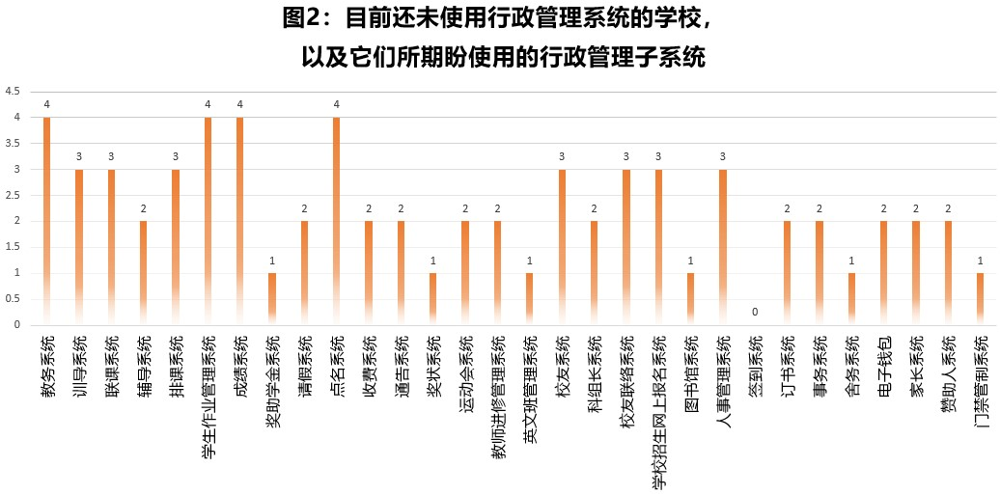
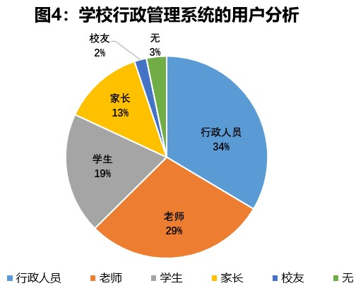

2022年全国华文独中和关丹中华中学教育数码化进程、转型与发展调查报告
新冠疫情对马来西亚的教育数码化发展带来显著影响。大数据的分析和应用也逐渐成为各领域寻求突破的主流趋势。为了引进资源，落实独中资讯科技整合，为全国华文独中引入“互补互通、共享共荣”的新模式，携手推进独中教育的数码化，董总就需要了解各华文独中对教育数码化进程、转型和发展的期望和想法。为此，董总资讯工艺局发出问卷，收集各校的资讯系统使用状况，以作为未来发展董总独中云资讯系统之参考依据。
该问卷分成4个部份：（一）行政系统；（二）维护团队；（三）教学软体；（四）硬体设备；（五）资讯处人员。本局通过电邮发出调查问卷表单（Google Forms），填写对象为全国华文独中和关丹中华中学的相关部门（60+2+1所学校），问卷于2022年8月1日发出，截至8月30日获得59所学校（西马38所，东马21所）的回复，回收率为93.7%，并于9月完成统计整理。
简述：
- 59所学校回复。最多学校使用的行政管理子系统是教务系统、训导系统、成绩系统、联课系统、图书馆系统。
- 上述统计不涵盖的子系统包括校长室系统、科任老师系统、班导师系统、人力培训系统、资产管理系统、绩效评估系统。

简述：
- 有9所学校没有使用行政管理系统。其中7所是东马独中，即6所小型学校和1所中型学校。
- 上述学校所期盼使用的行政管理子系统主要包括教务系统，学生作业管理系统、成绩系统和点名系统。
简述：
- 有35所学校请求外托服务，15所学校自行开发。

简述：
- 行政管理系统的用户分布是：学校行政人员占34%、老师占29%、学生占19%、家长占13%、校友占2%。
- 家长用户主要是透过家长系统查询学生资料、学校通告等。
- 学生用户主要是使用学校行政管理系统下的学生作业管理系统。
简述：
- 54所学校使用TM Unifi互联网服务，3所学校使用TM Streamyx（西马1所、东马2所），5所学校使用Maxis，1所学校使用Times（西马1所），以及1所使用Celcom的互联网服务。
- 6所学校使用两种以上的互联网服务。